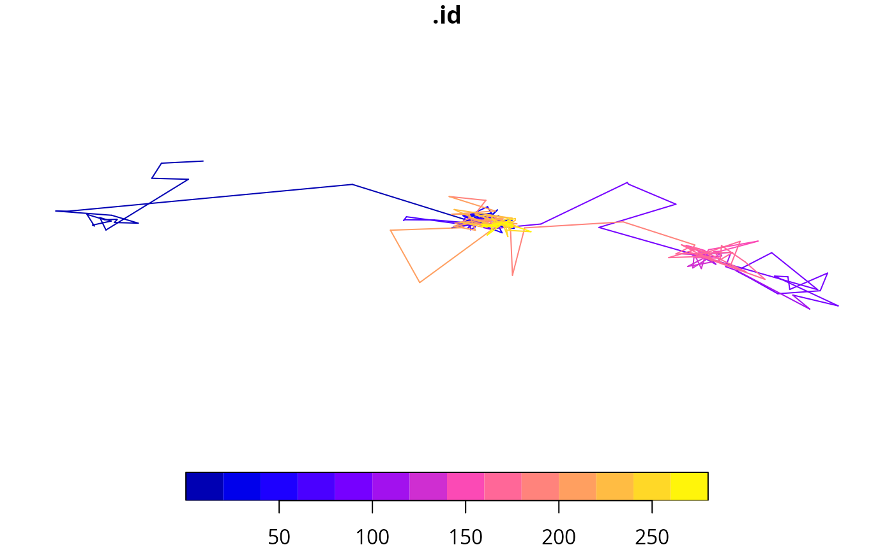

Takes a ctdf object and returns an sf object with LINESTRING geometries representing
the movement steps between consecutive locations. Each segment connects two points,
starting at the previous location and ending at the current one - i.e., each segment
ends at the position of the current row.
Arguments
- ctdf
A ctdf object (with ordered rows and a "location" geometry column).
- check
check ctdf object class. Default to TRUE.
Value
An sf object with LINESTRING geometry for each step.
Details
The number of rows is nrow(ctdf) - i, where i = 1 and corresponds to the starting index in ctdf.
Examples
data(mini_ruff)
ctdf = as_ctdf(mini_ruff)
s = as_ctdf_track(ctdf)
plot(s['.id'])
